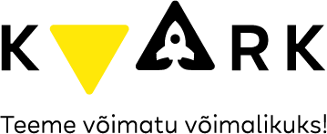

WHO (2010) soovitused maksimaalseks vingugaasi keskkonnas viibimiseks
- 0 ppm - ohutu keskkond
- 6 ppm - kuni 24 h
- 9 ppm - kuni 8 h
- 30 ppm - kuni 1 h
- 90 ppm - kuni 15 min
ppm ehk miljondikosa
(inglise keeles parts per million)

ppm ehk miljondikosa
(inglise keeles parts per million)